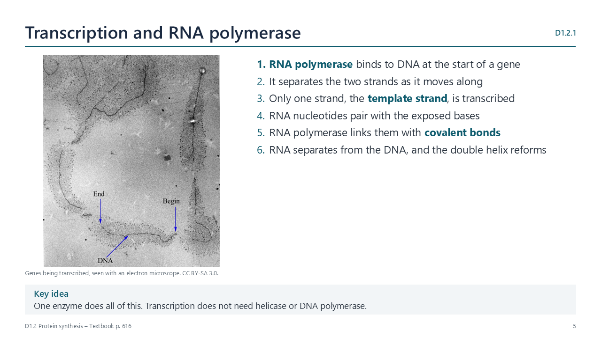
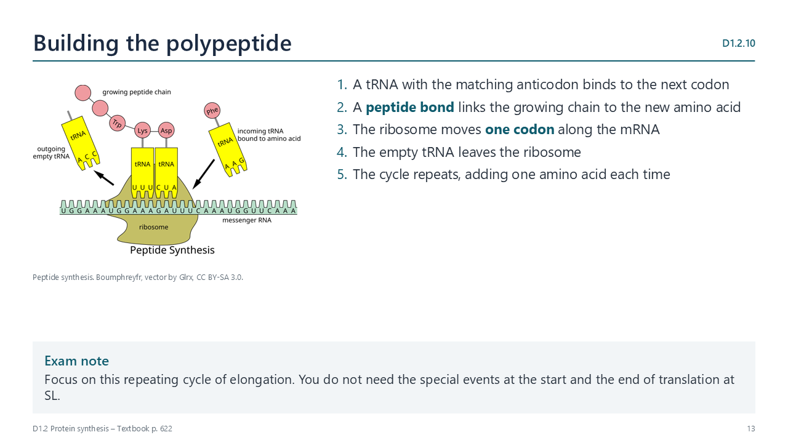

Written for this site from the course textbook and class slides, with page references for each statement. The chapter is on pages 615–624 of the course textbook. Image credits are on slide 28.
RNA polymerase binds to DNA at the start of a gene and separates the strands as it moves along. One strand acts as the template. RNA nucleotides pair with it, and RNA polymerase links them with covalent bonds. The RNA then separates, and the double helix reforms.
D1.2.2
Hydrogen bonds and base pairing
p. 617

Hydrogen bonds form between complementary bases. Adenine on the template pairs with uracil in RNA, as RNA has no thymine. The mRNA therefore matches the non-template strand, with U in place of T.
D1.2.3
Why DNA templates stay stable
p. 618
Transcription copies a base sequence without changing the DNA, so a gene can be transcribed many times. This matters in non-dividing body cells, such as neurons, where the same sequences must be conserved throughout life.
D1.2.4
Transcription and gene expression
p. 618
Not all genes in a cell are expressed at any given time. Transcription is the first stage of expression, so it is a key point for switching a gene on or off. Liver cells and neurons have the same genes, but they transcribe different ones.
Translation
D1.2.5
Translation: making polypeptides from mRNA
p. 618
The base sequence of mRNA decides the amino acid sequence of a polypeptide. The language changes here from bases to amino acids, which is why this stage is called translation.
D1.2.6
What mRNA, ribosomes and tRNA do
p. 619
Molecule
Role
mRNA
Carries codons from the gene, and binds to the small subunit of a ribosome
Ribosome
Holds mRNA and tRNA, with two tRNAs bound to the large subunit at once; forms peptide bonds
tRNA
Carries a specific amino acid, and pairs with a codon using its anticodon
D1.2.7
Codons and anticodons
p. 619
A codon is three bases on mRNA, and an anticodon is three complementary bases on tRNA. Hydrogen bonds hold them together. For example, codon G C A pairs with anticodon C G U.
D1.2.8
Features of the genetic code
p. 620
Triplet: two bases give only 16 combinations, too few for 20 amino acids. Three bases give 64.
Degenerate: more than one codon can code for the same amino acid.
Universal: almost all organisms read codons in the same way, which suggests a common ancestor.
Watch out: degenerate does not mean that one codon can give several amino acids.
D1.2.9
Reading a table of mRNA codons
pp. 621–622

Split the sequence into codons, then look up each in turn. A U G G C U U G U U A A gives Met, Ala, Cys, then stop. A stop codon adds no amino acid.
D1.2.10
How a ribosome builds a polypeptide
p. 622
A tRNA binds to the next codon. A peptide bond links the growing chain to the new amino acid. The ribosome moves one codon along, and the empty tRNA leaves. The cycle then repeats, adding one amino acid each time.
D1.2.11
Mutations that change protein structure
pp. 623–624
In sickle cell anaemia, one base in the gene for beta-globin is substituted. The codon GAG becomes GUG, so glutamic acid is replaced by valine. At low oxygen, haemoglobin forms long fibres, and red blood cells become rigid and sickle-shaped. They can block small blood vessels, and their short life leads to anaemia.
Videos
Select a video to play it here. Select it again to close it.
Print this guide and complete it as you work through the slides and videos. It asks for your own explanations, so close the notes while you try each section.
A printable worksheet covering all eleven statements, from quick recall to sequence questions and a longer answer. It has 45 marks and takes about 45 minutes, or you can do one section at a time.